/math-a97118fb9e8d7e006a466bfc0771f888.png "X_i") は昇順の行変数の明確な値で、たとえば、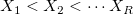
は昇順の行変数の明確な値で、たとえば、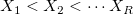
目次 |
クロス集計は、分割表とも呼ばれます。この機能は、変数間の関連の存在や強さを確かめるために使用されます。
定義
は昇順の行変数の明確な値で、たとえば、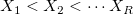| 統計 | 式および説明 |
|---|---|
| 度数 | |
| 期待度数 | 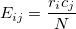 |
| 行パーセント | 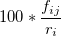 |
| 列パーセント | 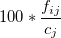 |
| 合計パーセント | 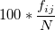 |
| 残差 | 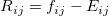 |
| 標準化残差 | 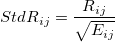 |
| 調整済み残差 | 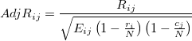 |
| 統計 | 式および説明 | 自由度 |
|---|---|---|
| ピアソンのカイ二乗 | 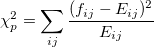 | 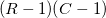 |
| 尤度比 | 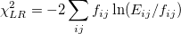 | |
| 線形関連 | 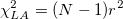, ここで /math-4b43b0aee35624cd95b910189b3dc231.png "r") はピアソンの相関係数 はピアソンの相関係数 |
|
| 連続補正 | 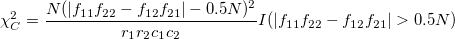, これは 2 x 2 表でのみ計算 |
この検定は、期待セル度数が低い(5よりも低い)とき便利です。2 x 2 表でのみ計算されます。次のような表を考えます。
| 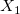 | 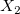 | 小計/合計 | |
|---|---|---|---|
/math-c772000136f6d3ba6dec3c7c5a35458b.png "Y_1") |
/math-6c773b2b7798e5713845e475d0c4b4c7.png "n_1") |
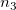 | 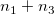 |
| 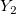 | /math-e501ae2ad90dc374410a774da21c5739.png "n_2") |
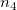 | /math-4d19d3c0c698ba1ab821a9d391ae4fac.png "n_2+n_4") |
| 小計/合計 | 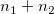 | 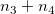 | /math-8d9c307cb7f3c4a32822a51922d1ceaa.png "N") |
帰無仮説(独立)下で、最初のセル/math-865adb153c19640c27383f3fc1ee7e8a.png "N_1") の度数は、以下で与えられる確率の超幾何分布です。
の度数は、以下で与えられる確率の超幾何分布です。
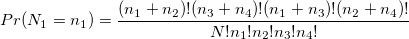, 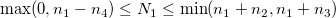.
片側検定の有意水準は以下で計算されます。
両側の有意性は
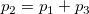
ここで
定義
| 統計 | 式および説明 | 標準誤差 | |
|---|---|---|---|
| Phi 係数 | /math-ade4cff8aeb025b9cae15f35a2dcd46d.png "\phi = \sqrt{\chi_p^2/N}") , これは 2 x 2 表でないとき計算。2 x 2 表の場合 に等しい。 , これは 2 x 2 表でないとき計算。2 x 2 表の場合 に等しい。
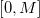 からの値の範囲, ここで 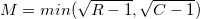 |
||
| クラメールのV | 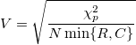 | ||
| C係数 | 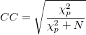 | ||
| ガンマ | 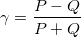 | ||
| ケンドール | タウb | ||
| タウc | , ここで | ||
| SomersのD | CR | ||
| RC | |||
| 対称 | |||
| ラムダ | CR | , ここで はi番目の行で最も大きな度数、 は最も大きな列小計 | , ここで は の列インデックス、 は の列小計のインデックス |
| RC | ,
ここで はj番目の列で最も大きな度数、 は最も大きな行小計 |
, ここで は の行インデックス、 |
|
| 対称 | ここで , , , および |
||
| 不確実性 | CR | , ここで /math-6c101af2c4e5d9d4e9a71bfd9cd1cee9.png "U(X) = -\sum_{i=1}^{R}\frac{r_i}{N}\ln\frac{r_i}{N}") , および , および , および , および |
, ここで |
| RC | |||
| 対称 | |||
この表は(1) であるような正方形の表かつ、(2)行変数と列変数が同じ値を持つときに計算されます。
カッパ統計は次式で計算されます。
昇順誤差は以下で推定されます。
ここで , ,
および
帰無仮説/math-25613c08c6b68a9704ffc406287fdbd2.png "\kappa = 0") 下の対応する漸近的標準誤差は以下で与えられます。
下の対応する漸近的標準誤差は以下で与えられます。
他の関連する統計はBowkerで、これは全ての対の検定/math-ba67ef5ead9d27984e0fc008b6a4ceeb.png "H_0: p_{ij} = p_{ji}") に使用されます。 の場合以下のように計算されます。
に使用されます。 の場合以下のように計算されます。
大きなサンプルでは、 は自由度 の漸近的なカイ二乗分布です。
2 x 2 表ではBowker'の検定はMcNemarの検定に等しくなります。そのためBowkerの検定のみ提供します。
これらは、2 x 2 表でのみ計算されます。
オッズ比は以下のように計算されます。
相対危険度は以下のように与えられます。
定義
Mantel-Haenszel統計は次式で計算されます。
sgn は符号関数 です。
Breslow-Day 統計は、
ここで です。
タローンの統計は、
ここで です。
2×2×K 表の場合、k番目のレイヤのオッズ比は です。共通オッズ比が存在すると仮定、つまり とすると、共通オッズ比のMantel-Haenszelの推定子は、
/math-30df4328bbc77817e4b8cd73539d4829.png "ln(\hat OR_{MH})") の漸近的分散は、
の漸近的分散は、
![\hat Var[ln(\hat OR_{MH})]=\frac{\sum_{k=1}^{K}\frac{(f_{11k}+f_{22k})f_{11k} f_{22k}}{n_{k}^2}}{2\sum_{k=1}^{K}\frac{f_{11k} f_{22k}}{n_{k}}}+\frac{\sum_{k=1}^{K}\frac{(f_{11k}+f_{22k})f_{12k} f_{21k}+(f_{12k}+f_{21k})f_{11k} f_{22k}}{n_{k}^2}}{2\sum_{k=1}^{K}\frac{f_{11k} f_{22k}}{n_{k}}\sum_{k=1}^{K}\frac{f_{12k} f_{21k}}{n_{k}}}+\frac{\sum_{k=1}^{K}\frac{(f_{12k}+f_{21k})f_{12k} f_{21k}}{n_{k}^2}}{2\sum_{k=1}^{K}\frac{f_{12k} f_{21k}}{n_{k}}}](../images/Algorithm(CrossTabs)/math-fe6d99fcba77f28d2e62c52d30d014f4.png "\hat Var[ln(\hat OR_{MH})]=\frac{\sum_{k=1}^{K}\frac{(f_{11k}+f_{22k})f_{11k} f_{22k}}{n_{k}^2}}{2\sum_{k=1}^{K}\frac{f_{11k} f_{22k}}{n_{k}}}+\frac{\sum_{k=1}^{K}\frac{(f_{11k}+f_{22k})f_{12k} f_{21k}+(f_{12k}+f_{21k})f_{11k} f_{22k}}{n_{k}^2}}{2\sum_{k=1}^{K}\frac{f_{11k} f_{22k}}{n_{k}}\sum_{k=1}^{K}\frac{f_{12k} f_{21k}}{n_{k}}}+\frac{\sum_{k=1}^{K}\frac{(f_{12k}+f_{21k})f_{12k} f_{21k}}{n_{k}^2}}{2\sum_{k=1}^{K}\frac{f_{12k} f_{21k}}{n_{k}}}")
の下側信頼限界(LCL)と上側信頼限界(UCL)は、
/math-8ce4b16b22b58894aa86c421e8759df3.png "k") は の行小計のインデックス
は の行小計のインデックス